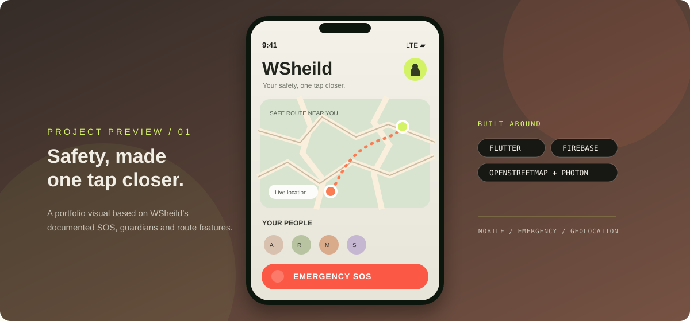
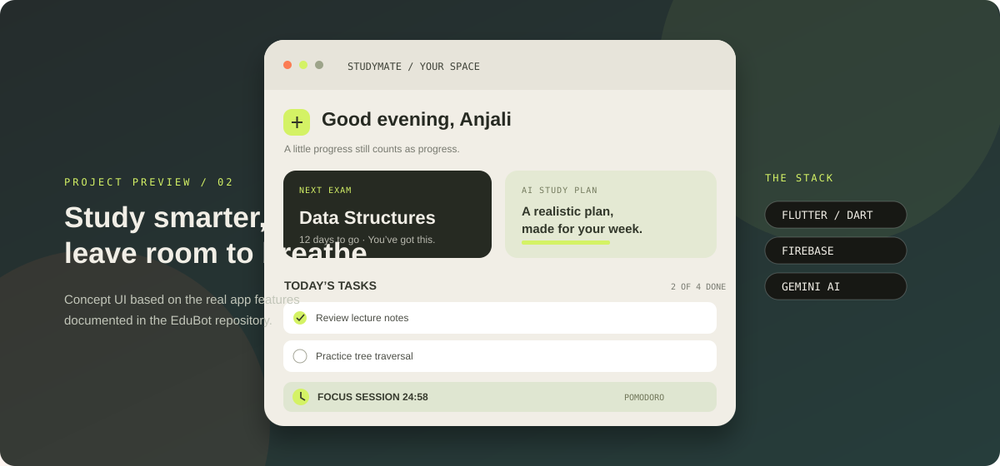
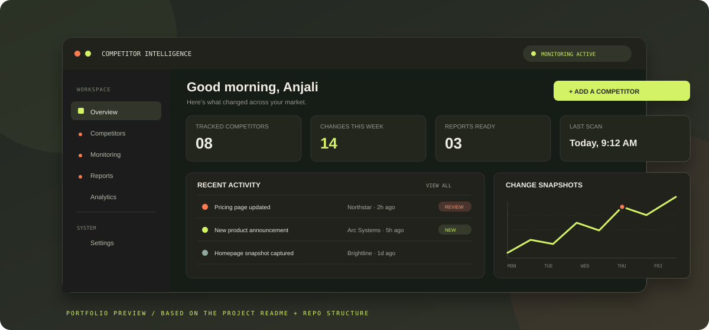

01MOBILE · SAFETY

PORTFOLIO CONCEPT VISUALWSheild · Women’s Safety
A safety app with one-tap SOS, live location, trusted guardians, safer OpenStreetMap routes, and Telegram community alerts.
DEVELOPER, CURRENTLY BUILDING AT ONESTACK
Computer science student, app builder, and enthusiastic untangler of complicated ideas. I work across mobile, full stack, and AI — preferably with a good song in the background.
part logic
part lyric
01 / SELECTED WORK
A few things I’ve built from the first “what if?” to the last stubborn bug.

PORTFOLIO CONCEPT VISUALA safety app with one-tap SOS, live location, trusted guardians, safer OpenStreetMap routes, and Telegram community alerts.

PORTFOLIO CONCEPT VISUALA study planner with exam countdowns, Gemini-generated study plans, daily tasks, and a Pomodoro timer that knows when to call a break.

PORTFOLIO CONCEPT VISUALTracks competitor homepages and pricing, keeps snapshot history, uses Gemini to classify changes, and turns the findings into PDF reports in a Next.js dashboard.
THE TOOLKIT / IN PRACTICE
From mobile screens to async jobs, from a clean API to AI that earns its keep.
React NativeFlutterKotlinJetpack ComposeMVVMRetrofit
FastAPISpring BootREST APIsPostgreSQLFirebaseRedisCelery
Gemini APIClaude APIPydanticAILLM integration
PythonJavaKotlinDartTypeScriptSQLDockerGit
Curious about the code? Browse my GitHub ↗
02 / IN THE FIELD
Learning by building with real people, real products, and the occasional “why is this API doing that?”
Building reusable React Native screens for a fintech product, bringing designs to life, and connecting the dots with backend APIs.
Small components. Fewer surprises.Built frontend and backend features and shipped end-to-end modules into a live production application.
A feature goes in. Actual people use it. Pretty good feeling.Inderprastha Engineering College, Ghaziabad. Learning how computers think; learning how people do too.
Currently in my “make it real” era.03 / THE HUMAN RELEASE NOTES
The short version: curious brain, many tabs open, one of them is always a song.
I like software that does something useful for someone. The fun part is figuring out how to make it work, feel simple, and maybe even bring a little delight.
Outside the editor: singing, public speaking, writing, and making @anjali_talks happen. If the code is compiling and the playlist is right, I’m probably not moving for a while.
(the Diet Coke is a supporting character)I want to be a little like Chintu, making apps for fun.To build AI-powered features that feel like helpful tools, not a robot who discovered the reply-all button.
Whatever makes the current task feel like a montage.
Singing, writing, and chatting things through at Anjali Talks ↗
Public speaking is another way I love sharing ideas and bringing people into the conversation.
ALSO, WITH A MIC (OR A MEETING AGENDA)
General Secretary, ACM Student Chapter · Vice President, Trinity Cyber Forum · Vice President, The Coding Foundation
04 / YOUR TURN
I like building useful things with thoughtful people. Tell me what you’re working on — I’ll bring questions and probably a playlist.
Let’s talk ↗